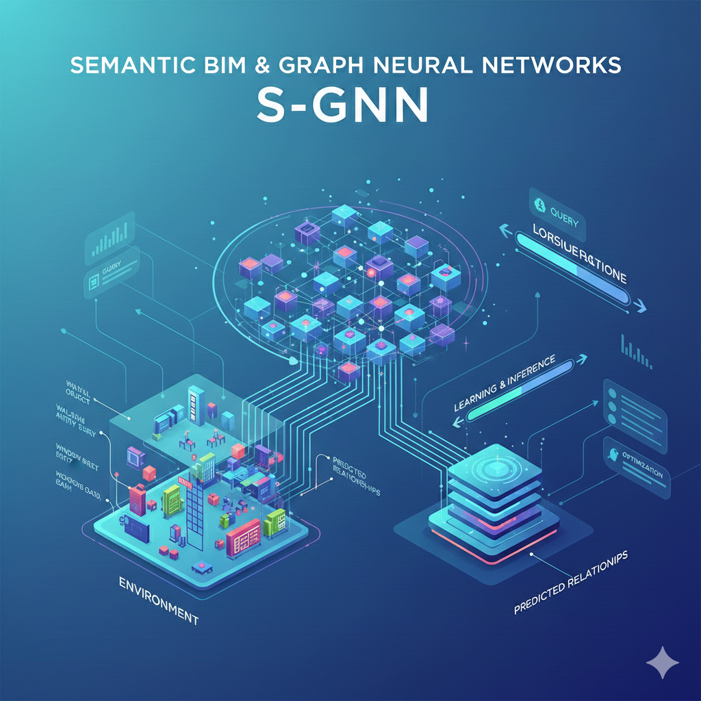
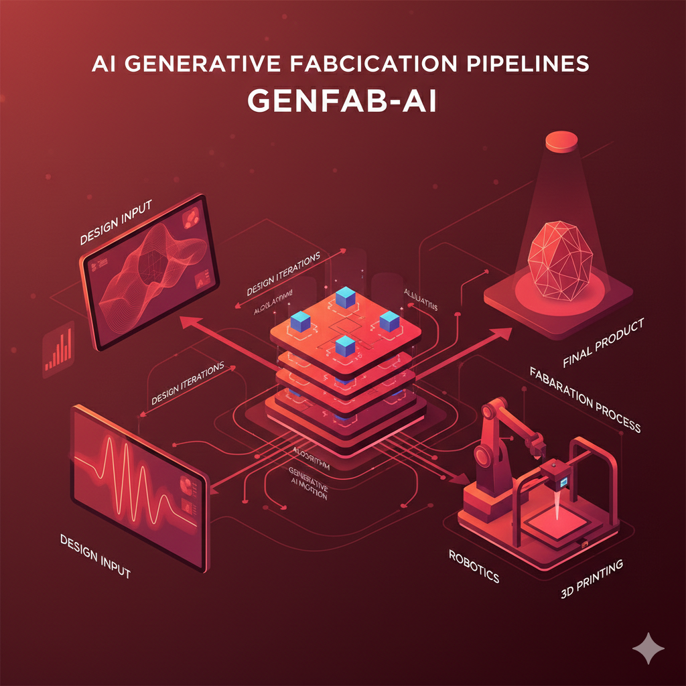
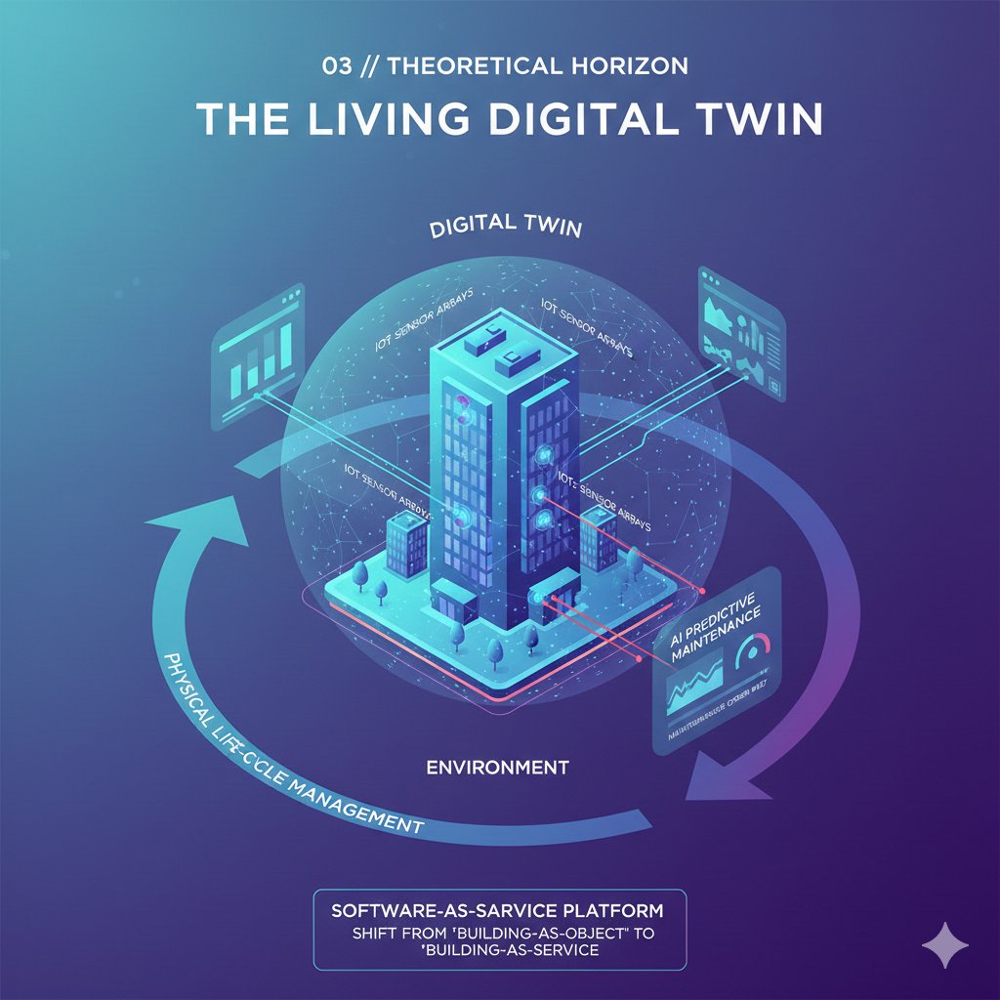
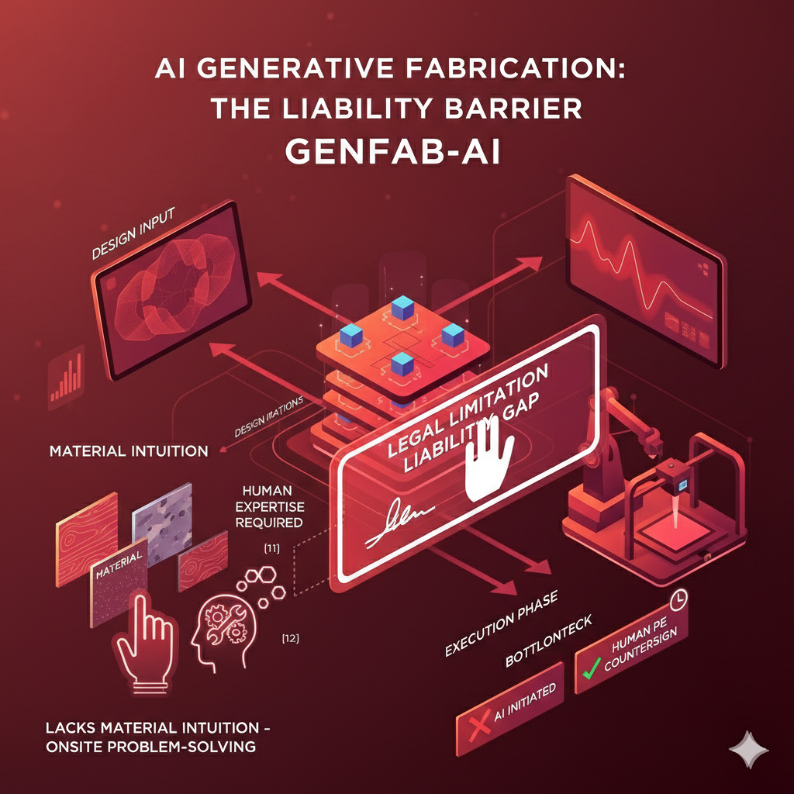

Semantic BIM & Graph Neural Networks
Current systems leverage Graph Neural Networks (GNNs) to interpret architectural space as topological data. This allows for automated "Room-Type" classification and adjacency checking within BIM environments like Revit or ArchiCAD. [25]
AI agents can now execute "Rule-Based Compliance," verifying if a fire exit meets the 20-meter travel distance requirement automatically, reducing manual auditing by 45%. [26]

Generative Fabrication Pipelines
The research frontier involves "Co-Designing" with fabrication constraints. Instead of designing a shape and then figuring out how to build it, AI integrates G-Code generation directly into the design loop. [27]
This enables "Zero-Waste Manufacturing," where the AI optimizes timber cutting patterns or 3D-printing paths in real-time based on material availability. [28]

The Living Digital Twin
In theory, a Digital Twin can become a "Living Agent." Utilizing IoT sensor arrays, the AI predicts structural fatigue or facade degradation before they occur, triggering autonomous maintenance requests. [34]
This represents a shift from "Building-as-Object" to "Building-as-Service," where the software manages the physical life-cycle until decommissioning. [35]

The Liability Barrier
The "Fundamental Limit" is not technical, but legal. AI cannot be held liable for structural collapse. Therefore, every "Execution" step must be countersigned by a human Professional Engineer (PE), creating a bottleneck. [12]
Additionally, AI lacks "Material Intuition"—the ability to feel the difference in wood grain or concrete slump—which is essential for onsite problem-solving during construction. [11]